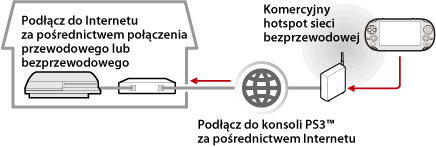

Sieć > Użycie zdalnego grania (za pomocą Internetu)
Użycie zdalnego grania (za pomocą Internetu)
Aby móc używać tej funkcji w systemie PS Vita lub PSP™, może być konieczne zaktualizowanie oprogramowania systemowego systemu PS3™ i systemu PS Vita lub PSP™.
Przy użyciu urządzenia obsługującego funkcję gry zdalnej, takiego jak system PS Vita lub PSP™ i bezprzewodowego punktu dostępowego można nawiązać połączenie z systemem PS3™ przez Internet. Aby móc korzystać z funkcji gry zdalnej, w systemie PS3™ należy włączyć tryb czuwania dla połączenia funkcji gry zdalnej.

Wskazówka
Zasady korzystania z komercyjnych hotspotów bezprzewodowej sieci LAN i opłaty za korzystanie różnią się w zależności od usługodawcy. Szczegółowe informacje na ten temat można uzyskać u samego usługodawcy.
Przygotowanie (1) (konsola PS3™ i urządzenie obsługujące funkcję gry zdalnej)
Aby po raz pierwszy skorzystać z funkcji gry zdalnej, należy zarejestrować (zsynchronizować) urządzenie obsługujące funkcję gry zdalnej, takie jak system PS Vita lub PSP™, z systemem PS3™. Aby zarejestrować (zsynchronizować) system, należy wybrać opcje  (Ustawienia) >
(Ustawienia) >  (Ustawienia gry zdalnej) > [Zarejestruj urządzenie].
(Ustawienia gry zdalnej) > [Zarejestruj urządzenie].
Przygotowanie (2) (urządzenie obsługujące funkcję gry zdalnej)
Utwórz połączenie sieciowe łączące system PS Vita lub PSP™ z punktem dostępowym. Do korzystania z funkcji gry zdalnej przez Internet można wykorzystać bezprzewodowy punkt dostępowy. Szczegółowe informacje na temat konfigurowania ustawień sieciowych w urządzeniu obsługującym funkcję gry zdalnej zawiera instrukcja dołączona do urządzenia.
Używanie funkcji gry zdalnej — system PS Vita
1. |
W systemie PS3™ wybierz opcje |
|---|
 (Sieć) >
(Sieć) >  (Gra zdalna).
(Gra zdalna).2. |
W systemie PS Vita stuknij kolejno polecenia |
|---|
 (Gra zdalna PS3) > [Początek].
(Gra zdalna PS3) > [Początek].3. |
Stuknij opcję [Połącz przez Internet]. |
|---|
Wskazówki
- W przypadku przejścia do ekranu innej aplikacji podczas korzystania z funkcji gry zdalnej połączenie zostanie przerwane po 30 sekundach.
- W systemie PS Vita podłącz konto Sony Entertainment Network używane w systemie PS3™. Jeżeli konto utworzono w systemie PS Vita lub na komputerze, można użyć tego konta również w systemie PS3™.
Funkcja gry zdalnej w systemie PSP™
1. |
W systemie PS3™ wybierz opcje |
|---|---|
2. |
W systemie PSP™ wybierz opcje |
3. |
Wybierz opcję [Połącz przez Internet]. |
4. |
Na liście połączeń zaznacz połączenie z punktem dostępu, które ma być używane przez funkcję zdalnego grania. |
5. |
Wprowadź identyfikator wpisu i hasło używanego konta Sony Entertainment Network. |
 (Gra zdalna).
(Gra zdalna).Używanie funkcji zdalnego grania za pośrednictwem Internetu
Zależnie od wykorzystywanych urządzeń sieciowych funkcja zdalnego grania za pośrednictwem Internetu może być niedostępna. W takim przypadku należy wykonać następujące czynności:
- Za pomocą funkcji (Ustawienia) >
 (Ustawienia sieci) > [Test połączenia internetowego] sprawdź, czy konsola PSP™ jest w stanie połączyć się z Internetem oraz usługą PSNSM.
(Ustawienia sieci) > [Test połączenia internetowego] sprawdź, czy konsola PSP™ jest w stanie połączyć się z Internetem oraz usługą PSNSM. - Jeśli używany router obsługuje standard UPnP, włącz w nim obsługę funkcji UPnP.
- Jeśli używany router nie obsługuje standardu UPnP, skonfiguruj w nim funkcję przekierowywania portów, ponieważ tylko wtedy będzie istniała możliwość komunikacji z konsolą PS3™ za pośrednictwem Internetu. Funkcja zdalnego grania korzysta z portu TCP: 9293. Informacje na temat konfigurowania tej opcji można znaleźć w instrukcji dołączonej do routera.
- Przekierowywanie portów to funkcja odpowiadająca za przekazywanie sygnałów przychodzących do jednego portu (wejścia) do innego określonego portu (wyjścia). Inne popularne nazwy tej funkcji to "mapowanie portów" i "konwersja adresów".
- Jeśli konsola PS3™ łączy się z Internetem za pośrednictwem więcej niż jednego routera, mogą występować problemy z komunikacją.
Wskazówki
- Router to urządzenie, które umożliwia współużytkowanie jednego łącza internetowego przez kilka urządzeń.
- Zależnie od funkcji zabezpieczeń skonfigurowanych w routerze i określonych przez dostawcę usług internetowych mogą istnieć ograniczenia w komunikacji. Więcej informacji można znaleźć w instrukcjach dołączonych do urządzenia sieciowego oraz uzyskać od dostawcy.